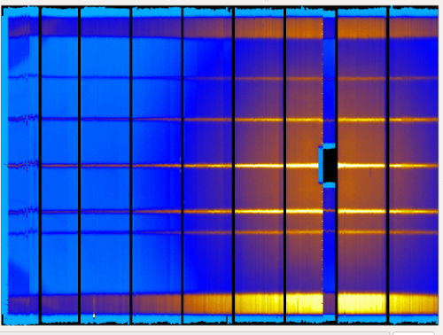
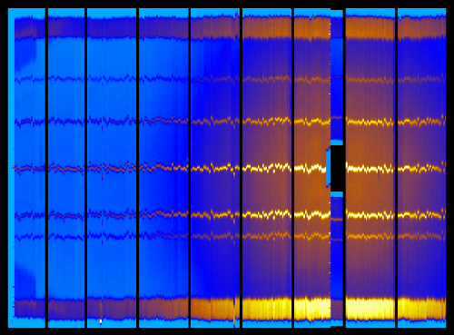

\(\renewcommand\AA{\unicode{x212B}}\)
How to reset detectors calibration¶
Some NeXuS data files have the calibration inside the data. Hence, in loading time, Mantid will load the positions for the detector and correct them. These new positions are kept inside the parameter maps that each instrument has.
Some times you may be interested in resetting the calibrated values, in order to see how the uncalibrated instrument. You may do this through two steps.
Let’s load a calibrated workspace: MERLIN 12024 (cycle 11/05):
mer12024 = Load('MER12024')
Open the Instrument View and select Cylindrical Rendering, you will see something like:
This image is clearly calibrated. To reset the calibration, execute:
empty_instr = LoadEmptyInstrument('MANTIDINSTALL/instrument/MERLIN_Definition.xml')
CopyInstrumentParameters(empty_instr, mer12024)
The result is resetting the calibration of this workspace as you can see in the image below:
Category: Calibration